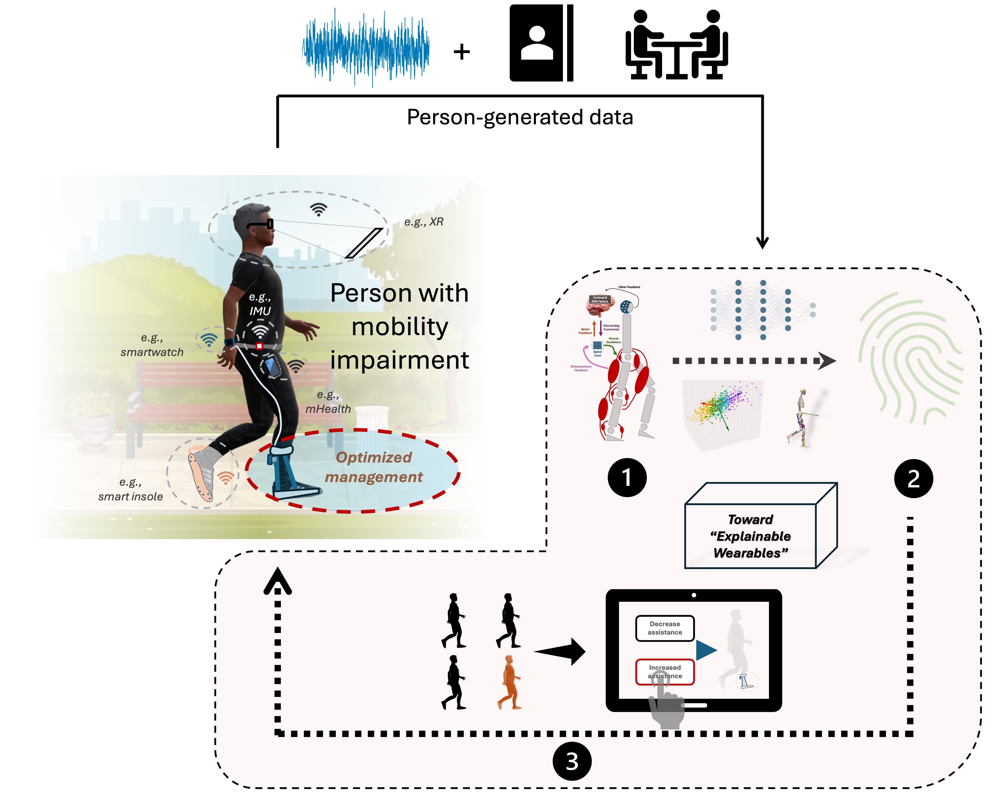

About
Cyrille, originally from France and Cameroon, is a clinician-informatician currently pursuing a PhD at the Human Brain Control of Locomotion Laboratory at McGill University (Canada) under Dr. Paquette, and at the Data Analytics and Rehabilitation Technology Laboratory (Switzerland) at Lake Lucerne Institute under Dr. Easthope Awai. His doctoral research uses data mining techniques to improve the clinical interpretability of digital mobility biomarkers in Parkinson’s disease. For this work, Cyrille has received multiple prestigious distinctions at institutional and international levels, including the Next Generation Scholar recognition from the IEEE Engineering in Medicine and Biology Society, Google, and the US National Science Foundation. Prior to his PhD, he was a visiting student at EPFL within the Institute of Bioengineering, working on assistive robotics for mobility assistance with Dr. Manzoori and Dr. Bouri. He also holds a Master of Science in Informatics (Digital Sciences) with a focus on biomedical data science and a Bachelor of Podiatric Medicine (BSc/BMed) from the University of Paris - Cité in France.
Beyond research, Cyrille is committed to advancing STEM education through innovative teaching and mentoring. His contributions to neuroeducation and collaborative learning have reached large and diverse student populations, and have also been recognized internationally.
Cyrille envisions a future as an academic where, on the one hand, he will establish a research program centered on intelligent wearable systems that generate clinically interpretable insights to inform personalized care in geriatric populations with mobility impairments and, on the other hand, develop new educational approaches that empower learners with complex needs.
Research Summary

It first seeks to uncover behavioural signatures of sensorimotor deficits underlying mobility impairments using innovative technologies that allow selective interrogation of the sensorimotor system, such as bioimaging, or controlled sensory manipulations (e.g., fully immersive motion capture) (focus 1). Second, it uses computational methods to combine real-world multimodal wearable sensing data (e.g., inertial, pressure, or mobile sensing) with clinical data (e.g., electronic health records) and qualitative measures (e.g., patient-reported outcomes, interviews) to reveal the etiological meaning of wearable-derived insights and uncover person-specific fingerprints driving sensorimotor deficits (focus 2). Third, it leverages these mechanistic fingerprints to develop personalized interventions that improve the management of mobility impairments in daily life (e.g., monitoring biomarkers, passive or active assistive devices) (focus 3).
(with subtitles!)
Website launched with dedicated sections for research, teaching, and service.
Ongoing work continues on wearable sensing and digital mobility outcomes in Parkinson’s disease.
Current projects focus on gait analysis, construct validity, and uncertainty-aware artificial intelligence.
Research activities expanded across real-world monitoring, neurorehabilitation, and precision health.
CSCW 2025, Bergen
L@S 2025, Palermo
ITiCSE 2025, Nijmegen
JDPLS Spring School
CHI 2025, Yokohama
Publications
(* indicates equal contribution and ** indicates mentee student)
Curriculum Vitae
Miscellaneous
- I genuinely enjoy turning messy movement data into clean and interpretable stories.
- I care a lot about making science both rigorous and visually elegant.